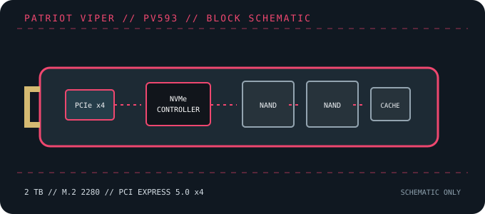

[ PCIE 5.0 NVME DRIVES // IDENTIFIED PRODUCT ]
Patriot VIPER PV593 2 TB
2 TB M.2 2280 PCIe Gen5 x4 NVMe SSD in the Patriot VIPER PV593 family. The 14,000/13,000 MB/s figures are peak manufacturer ratings for this capacity class.

IDENTIFICATION: Confirm the printed model code, capacity, suffix, hardware revision and firmware against the actual drive. Similar family names can denote different heatsinks, controller platforms and performance. Values here identify the cited 2 TB SKU and remain subject to the linked manufacturer documentation.
Manufacturer-identified specifications
| Model / manufacturer code | Patriot VIPER PV593 2 TB — PV593 2 TB configuration (manufacturer retail code not exposed on the cited product page) |
|---|---|
| Capacity / physical format | 2 TB; M.2 2280, bare module |
| Interface / lane width | PCI Express 5.0 x4; backward operation depends on host PCIe/NVMe support. |
| Protocol | NVMe command protocol; exact revision and optional features depend on drive firmware and host support. |
| Vendor-rated sequential performance | Up to 14,000 MB/s read / 13,000 MB/s write; peak ratings, not sustained guarantees. |
| Endurance / warranty | 1,400 TBW; 5-year limited warranty (regional terms apply) |
| Controller / flash | Silicon Motion SM2508 (reported for PV593); 3D TLC NAND. Component details can vary by production revision; use the exact drive label and current manufacturer documentation. |
| Cooling / package note | Bare M.2 module. Select a host heatsink/airflow solution suitable for sustained Gen5 transfers; verify any bundled heatsink against the exact SKU. |
Compatibility, installation & service
- M.2 2280 M-key NVMe socket required. PCIe 5.0 x4 is needed for peak transfer rates; PCIe 4.0/3.0 hosts can negotiate down when the host supports NVMe.
- Use a suitable M.2 cooling solution during prolonged workloads. Verify standoff length, motherboard thermal-pad thickness and clearance around neighboring components.
- Check host lane allocation and UEFI support, and use the product label to distinguish the PV593 from other VIPER Gen5 models or capacities.
- Before replacing a boot drive, create a recoverable backup and confirm OS recovery media, encryption keys and firmware settings. Follow clean shutdown and electrostatic-discharge precautions; do not hot-plug M.2 unless the platform manual explicitly supports it.
Product references
- Patriot Memory — VIPER PV593 product pageManufacturer-rated Gen5 interface and maximum sequential performance.
- TechPowerUp — Patriot Viper PV593 2 TB specificationsIndependent model/capacity-specific specification reference.
Manufacturer ratings are capacity- and test-condition-specific. Independent tests characterize only the tested sample and workload. Consult current manuals and support portals for revisions, fit, firmware and warranty conditions.